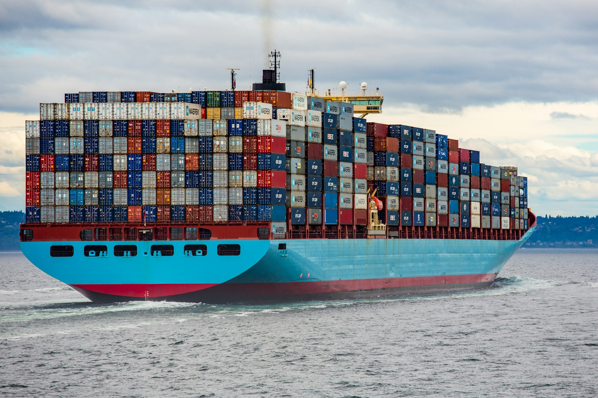

01 / IMPORT-EXPORTACHETER · IMPORTER · ACHEMINER
Import-export
Accompagnement dans l’achat, l’importation et l’acheminement de marchandises depuis différents marchés internationaux. Nous échangeons avec vous sur le besoin, les options à étudier et la destination envisagée.
- Clarification de votre demande et des caractéristiques du produit
- Accompagnement dans la démarche d’achat international
- Échange sur l’organisation de l’acheminement